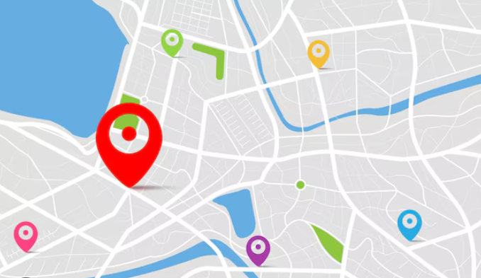

<ion-header [translucent]="true">
  <ion-toolbar>
    <ion-title>Interactive Map</ion-title>
    <ion-buttons slot="start">
      <ion-back-button default-href="/tabs/tab2"></ion-back-button>
    </ion-buttons>
  </ion-toolbar>
</ion-header>

<ion-content [fullscreen]="true">
  <ion-header collapse="condense">
    <ion-toolbar>
      <ion-title size="large">Interactive Map</ion-title>
    </ion-toolbar>
  </ion-header>
  
</ion-content>
